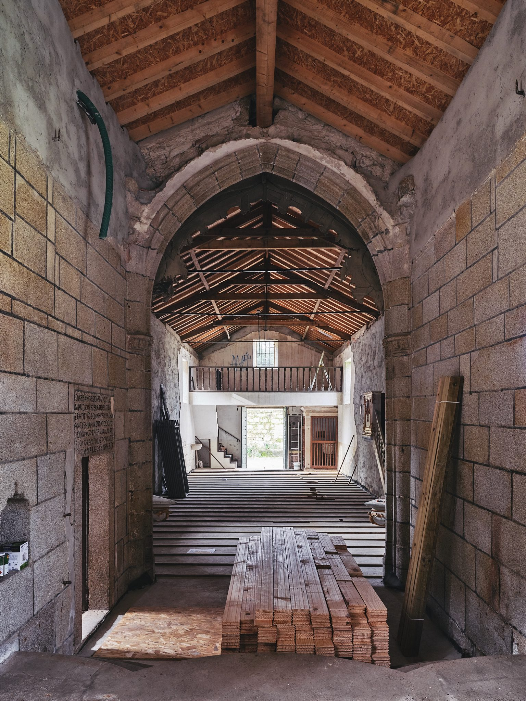
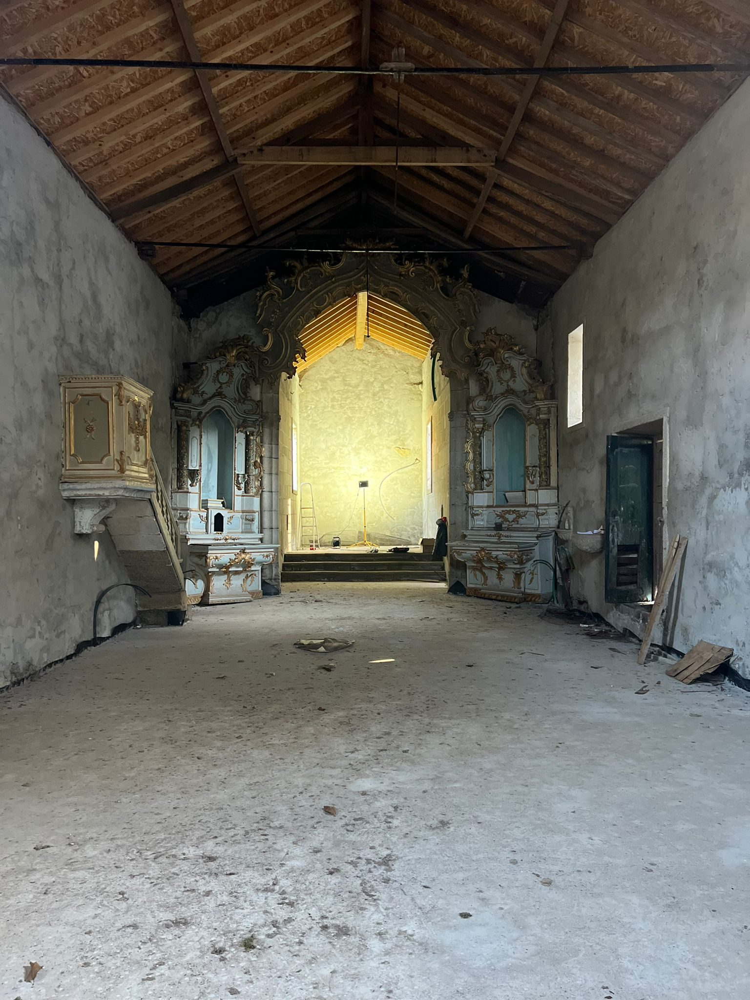

eventos
| 18 de Março | Voar Muito Perto do Sol | Auditório | Criação |
| 24 de Março | Projeto A | Igreja | Formação |
| 10 de Abril | Projeto B | Igreja | Apresentação |
| 22 de Maio | Projeto C | Exterior | Criação |
Próximos
Aulas regulares, workshops, campos de férias, sessões de cinema e experiências na natureza. As datas acima são as primeiras marcadas; segue-nos para as restantes.
Últimos
Ainda sem eventos passados para mostrar.
Arquivo · fotografias e vídeos


Próximos · últimos · arquivo - fotografias e vídeos